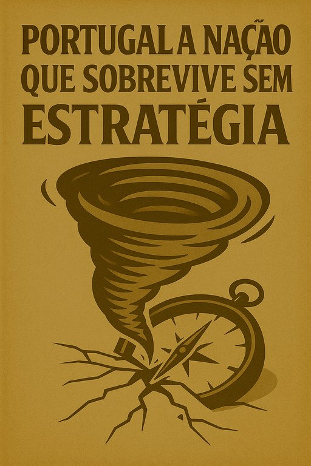

Publicado em 2025-05-26 10:48:16
Portugal tem sol, mar e saudade. Mas falta-lhe aquilo que verdadeiramente sustenta um país moderno: pensamento estratégico.
Vivemos à vista curta, ao sabor do improviso, a navegar entre crises — como se o futuro fosse sempre uma surpresa.
O país funciona como um carro velho: quando o motor falha, troca-se a correia. Quando os travões falham, mete-se óleo. Nunca se faz a revisão completa, nunca se olha o mapa. Vai-se andando.
A falta de visão estratégica é endémica:
E quem pensa diferente? É visto como excêntrico.
Quem propõe uma reforma de fundo? É ignorado até que seja tarde demais.
Falta de estratégia custa caro:
“Não planeamos o futuro — e depois culpamos o presente.”
A maioria das empresas tem medo de inovar.
Preferem o seguro, o conhecido, o rotineiro.
A administração pública, essa, trava qualquer mudança com regulamentos do século passado.
Portugal torna-se um país que não arrisca. E quem não arrisca, repete.
E quem repete, estagna.
Sim, ela existe. Está nas mentes inquietas.
Nos jovens que não aceitam a mediocridade.
Nos cidadãos que se organizam fora dos partidos.
Nos pensadores, nos criadores, nos que ainda têm coragem para propor um país diferente.
Mas falta-lhes espaço. Falta-lhes voz. Falta-lhes quem os ouça.
Portugal sobreviverá mais uns anos sem estratégia.
Mas jamais prosperará assim.
Pensar a longo prazo não é luxo — é necessidade.
E o futuro começa com quem hoje se atreve a pensar contra a corrente.
“Uma nação que não pensa o seu futuro, será pensada por outros.”
Artigo de Francisco Gonçalves in Fragmentos de Caos
Imagem cortesia de OpenAI (c)
Porque acredito que o pensamento deve ser partilhado, não aprisionado.
Escrevo para despertar, não para agradar.
Publico livremente porque o saber é um direito, não um produto.